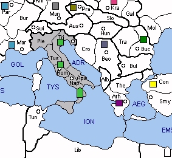

ITALY (I) exchanges Austria-Hungary for an assortment of armed and unarmed minors. As a result, Italy can probably gain two builds during its first year. Further expansion in the Balkans is a possibility but such a move will certainly incur the wrath of Germany and its minor, Yugoslavia. Otherwise, the terrain is fairly familiar. Neighbouring sea zones are the same as in Standard, and Italy must still strive for control of the Ionian Sea. Italy is unlikely to be surprise attacked early in the game but its biggest challenge is to find an avenue for steady growth.
Sweden is probably the second strongest minor in the game and a major force in shaping Scandinavia. If Germany is reluctant to risk an early bounce, then Sweden can capture Denmark on the first move and gain itself a build. If Sweden is vacated, Italy may require the cooperation of USSR, which often takes Finland on the first move. USSR will be concerned about any Swedish builds, unless Italy has declared itself against Germany, and Italy may have to promise to build in the south. Alternatively, Sweden can deny Finland to USSR but this may involve a guessing game. I.e. will Fleet Leningrad sortie directly to Finland or to the Gulf of Bothnia? Looking west, Sweden can take Oslo on the first turn but it will be lost on the following turn if Britain uses the Churchill opening.
|
 |
MINOR (Basic): Sweden SUGGESTED MINORS (Advanced): Spain, Yugoslavia, Czechoslovakia POTENTIAL ALLIES: BRITAIN versus France, Germany and Spain (Poland) FRANCE versus Britain, Germany and Spain (Poland) |
Suggested Openings for Italy:
Balkan: |
A TRI-CRO, A ROM-TRI, F NAP-ION |
|
Bypassing Austria, Italy instead gravitates towards the Balkans. Assistance from German controlled Yugoslavia would prove helpful in capturing Hungary and then challenging Turkey and Poland for dominance of the region. |
|
Mussolini’s Lepanto: |
A TRI-AUS, A ROM-APU, F NAP-ION |
|
Given a cooperative Egyptian, Italy could convoy an army to Turkey during the first year. Alternatively, Tunis is still an option with a follow-up move to the Balkans in subsequent turns. |
|
Roman Riviera: |
A TRI-PIE, A ROM-TRI, F NAP-ION |
|
With assistance from Spain or Germany, Italy can attack Marseilles and cripple France early. However, this opening leaves the Balkans to Turkey so ensure that the USSR is ready to tackle the Sultan. |
With respect to alliances, Britain can offer an effective partnership. Although each nation's minor tends to act as a thorn in the side of its ally, both Britain and Italy are positioned to cooperate against either France or Germany. In particular, Sweden can apply critical pressure to Germany's northern flank, thus paving the way for success. Where possible, Italy should encourage Britain to pursue a naval strategy, thus limiting the growth of the British army. Italy should also seek control of Spain and Munich, sacrificing Scandinavia if required.
Another option is a French alliance. The immediate target would probably be Germany with Britain as the follow-up. Ongoing cooperation may depend on the division of the Alps, which in turn has major implications for the control of Munich. Assuming that France ends up with Britain and the Low Countries, Italy should get Germany and Iberia. However, France will probably want Spain and Portugal for itself, and such an outcome would provide France with a strong corner position - and perhaps an eventual stab of Italy.
Italy should guard against French-Turkish and German-Turkish alliances. Although Turkey is the common denominator, Italy may prefer to engineer French-German conflict rather than seeking a USSR attack on Turkey. A war between USSR and Turkey could easily become a Polish-Turkish war against USSR, with the result being an enlarged Turkey.